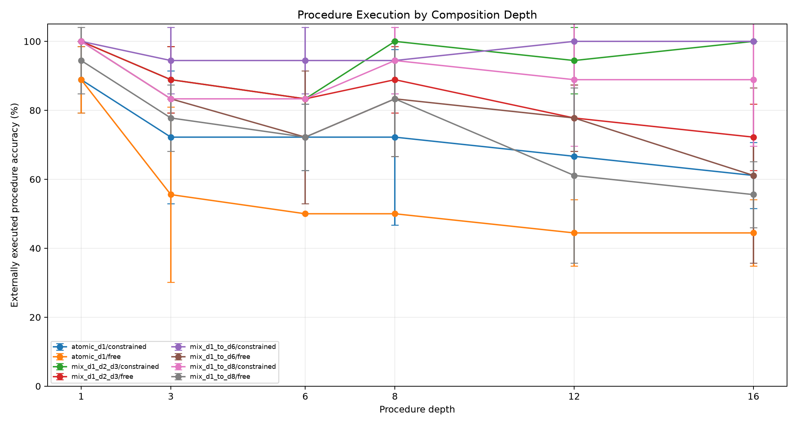
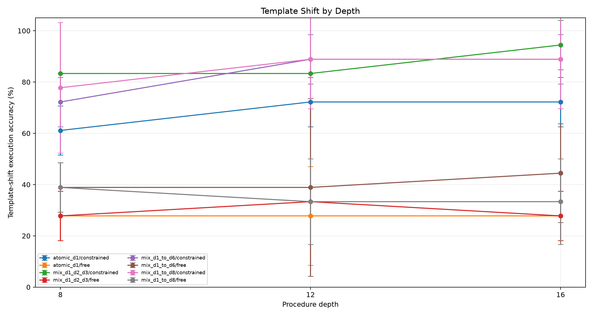
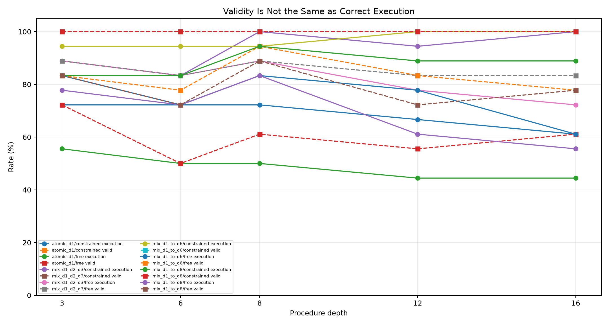
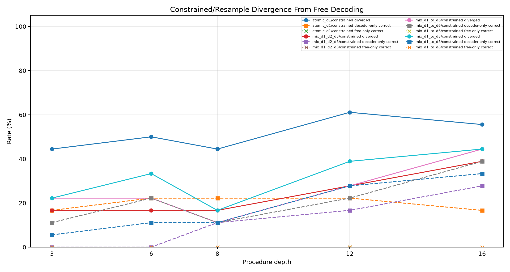
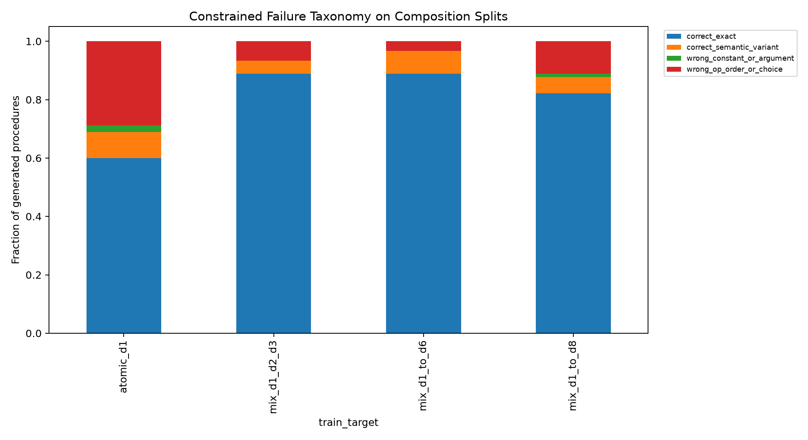
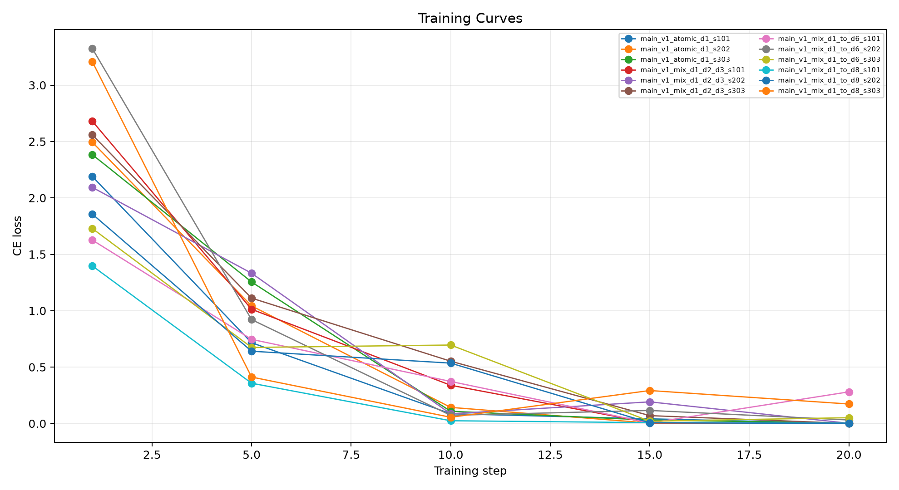

This standalone experiment measures how far a constrained stack-ABI compiler extrapolates beyond its maximum supervised composition depth. The model emits a program; a deterministic interpreter executes it. The central question is whether shallow composition training is enough for long procedures, or whether the curriculum must reach roughly half the deployment depth.
Four QLoRA adapters are trained with the same ABI target and different maximum curriculum depths:
Evaluation sweeps standard prompts at depths 1, 3, 6, 8, 12, and 16, plus wording-shifted prompts at depths 8, 12, and 16. Each trained adapter is evaluated with free greedy decoding and finite-state constrained decoding. A gold ABI sanity arm checks the interpreter.
The primary criterion is constrained external execution accuracy at depths 12 and 16. Valid-program rate alone is not a success metric; a deeper curriculum must reduce valid-but-wrong composition errors, not only improve syntax.
Depth-6 deltas: max3 minus atomic 11.1%; max6 minus max3 11.1%; max8 minus max6 -11.1%.
Depth-8 deltas: max3 minus atomic 27.8%; max6 minus max3 -5.6%; max8 minus max6 0.0%.
Depth-12 deltas: max3 minus atomic 27.8%; max6 minus max3 5.6%; max8 minus max6 -11.1%.
Depth-16 deltas: max3 minus atomic 38.9%; max6 minus max3 0.0%; max8 minus max6 -11.1%.
| train_target | arm | split | depth | runs | n_total | exec_accuracy_mean | exec_accuracy_std | valid_exec_rate_mean | correct_given_valid_mean | divergence_rate_mean | constrained_only_rate_mean | free_only_rate_mean | mean_attempts_mean |
|---|---|---|---|---|---|---|---|---|---|---|---|---|---|
| atomic_d1 | program_stack_constrained | eval_comp_d12 | 12 | 3 | 18 | 66.7% | 0.0% | 100.0% | 66.7% | 61.1% | 22.2% | 0.0% | 1.00 |
| atomic_d1 | program_stack_free | eval_comp_d12 | 12 | 3 | 18 | 44.4% | 9.6% | 55.6% | 80.6% | n/a | n/a | n/a | 1.00 |
| mix_d1_d2_d3 | program_stack_constrained | eval_comp_d12 | 12 | 3 | 18 | 94.4% | 9.6% | 100.0% | 94.4% | 27.8% | 16.7% | 0.0% | 1.00 |
| mix_d1_d2_d3 | program_stack_free | eval_comp_d12 | 12 | 3 | 18 | 77.8% | 9.6% | 83.3% | 94.4% | n/a | n/a | n/a | 1.00 |
| mix_d1_to_d6 | program_stack_constrained | eval_comp_d12 | 12 | 3 | 18 | 100.0% | 0.0% | 100.0% | 100.0% | 27.8% | 22.2% | 0.0% | 1.00 |
| mix_d1_to_d6 | program_stack_free | eval_comp_d12 | 12 | 3 | 18 | 77.8% | 9.6% | 83.3% | 94.4% | n/a | n/a | n/a | 1.00 |
| mix_d1_to_d8 | program_stack_constrained | eval_comp_d12 | 12 | 3 | 18 | 88.9% | 19.2% | 100.0% | 88.9% | 38.9% | 27.8% | 0.0% | 1.00 |
| mix_d1_to_d8 | program_stack_free | eval_comp_d12 | 12 | 3 | 18 | 61.1% | 25.5% | 72.2% | 83.3% | n/a | n/a | n/a | 1.00 |
| oracle | gold_abi_constrained | eval_comp_d12 | 12 | 3 | 18 | 100.0% | 0.0% | 100.0% | 100.0% | n/a | n/a | n/a | 0.00 |
| atomic_d1 | program_stack_constrained | eval_comp_d16 | 16 | 3 | 18 | 61.1% | 9.6% | 100.0% | 61.1% | 55.6% | 16.7% | 0.0% | 1.00 |
| atomic_d1 | program_stack_free | eval_comp_d16 | 16 | 3 | 18 | 44.4% | 9.6% | 61.1% | 72.2% | n/a | n/a | n/a | 1.00 |
| mix_d1_d2_d3 | program_stack_constrained | eval_comp_d16 | 16 | 3 | 18 | 100.0% | 0.0% | 100.0% | 100.0% | 38.9% | 27.8% | 0.0% | 1.00 |
| mix_d1_d2_d3 | program_stack_free | eval_comp_d16 | 16 | 3 | 18 | 72.2% | 9.6% | 83.3% | 87.8% | n/a | n/a | n/a | 1.00 |
| mix_d1_to_d6 | program_stack_constrained | eval_comp_d16 | 16 | 3 | 18 | 100.0% | 0.0% | 100.0% | 100.0% | 44.4% | 38.9% | 0.0% | 1.00 |
| mix_d1_to_d6 | program_stack_free | eval_comp_d16 | 16 | 3 | 18 | 61.1% | 25.5% | 77.8% | 76.7% | n/a | n/a | n/a | 1.00 |
| mix_d1_to_d8 | program_stack_constrained | eval_comp_d16 | 16 | 3 | 18 | 88.9% | 19.2% | 100.0% | 88.9% | 44.4% | 33.3% | 0.0% | 1.00 |
| mix_d1_to_d8 | program_stack_free | eval_comp_d16 | 16 | 3 | 18 | 55.6% | 9.6% | 77.8% | 71.7% | n/a | n/a | n/a | 1.00 |
| oracle | gold_abi_constrained | eval_comp_d16 | 16 | 3 | 18 | 100.0% | 0.0% | 100.0% | 100.0% | n/a | n/a | n/a | 0.00 |
| atomic_d1 | program_stack_constrained | eval_comp_d6 | 6 | 3 | 18 | 72.2% | 9.6% | 100.0% | 72.2% | 50.0% | 22.2% | 0.0% | 1.00 |
| atomic_d1 | program_stack_free | eval_comp_d6 | 6 | 3 | 18 | 50.0% | 0.0% | 50.0% | 100.0% | n/a | n/a | n/a | 1.00 |
| mix_d1_d2_d3 | program_stack_constrained | eval_comp_d6 | 6 | 3 | 18 | 83.3% | 0.0% | 100.0% | 83.3% | 16.7% | 0.0% | 0.0% | 1.00 |
| mix_d1_d2_d3 | program_stack_free | eval_comp_d6 | 6 | 3 | 18 | 83.3% | 0.0% | 83.3% | 100.0% | n/a | n/a | n/a | 1.00 |
| mix_d1_to_d6 | program_stack_constrained | eval_comp_d6 | 6 | 3 | 18 | 94.4% | 9.6% | 100.0% | 94.4% | 22.2% | 22.2% | 0.0% | 1.00 |
| mix_d1_to_d6 | program_stack_free | eval_comp_d6 | 6 | 3 | 18 | 72.2% | 19.2% | 77.8% | 91.7% | n/a | n/a | n/a | 1.00 |
| mix_d1_to_d8 | program_stack_constrained | eval_comp_d6 | 6 | 3 | 18 | 83.3% | 0.0% | 100.0% | 83.3% | 33.3% | 11.1% | 0.0% | 1.00 |
| mix_d1_to_d8 | program_stack_free | eval_comp_d6 | 6 | 3 | 18 | 72.2% | 9.6% | 72.2% | 100.0% | n/a | n/a | n/a | 1.00 |
| oracle | gold_abi_constrained | eval_comp_d6 | 6 | 3 | 18 | 100.0% | 0.0% | 100.0% | 100.0% | n/a | n/a | n/a | 0.00 |
| atomic_d1 | program_stack_constrained | eval_comp_d8 | 8 | 3 | 18 | 72.2% | 25.5% | 100.0% | 72.2% | 44.4% | 22.2% | 0.0% | 1.00 |
| atomic_d1 | program_stack_free | eval_comp_d8 | 8 | 3 | 18 | 50.0% | 0.0% | 61.1% | 83.3% | n/a | n/a | n/a | 1.00 |
| mix_d1_d2_d3 | program_stack_constrained | eval_comp_d8 | 8 | 3 | 18 | 100.0% | 0.0% | 100.0% | 100.0% | 16.7% | 11.1% | 0.0% | 1.00 |
| mix_d1_d2_d3 | program_stack_free | eval_comp_d8 | 8 | 3 | 18 | 88.9% | 9.6% | 88.9% | 100.0% | n/a | n/a | n/a | 1.00 |
| mix_d1_to_d6 | program_stack_constrained | eval_comp_d8 | 8 | 3 | 18 | 94.4% | 9.6% | 100.0% | 94.4% | 11.1% | 11.1% | 0.0% | 1.00 |
| mix_d1_to_d6 | program_stack_free | eval_comp_d8 | 8 | 3 | 18 | 83.3% | 16.7% | 94.4% | 88.9% | n/a | n/a | n/a | 1.00 |
| mix_d1_to_d8 | program_stack_constrained | eval_comp_d8 | 8 | 3 | 18 | 94.4% | 9.6% | 100.0% | 94.4% | 16.7% | 11.1% | 0.0% | 1.00 |
| mix_d1_to_d8 | program_stack_free | eval_comp_d8 | 8 | 3 | 18 | 83.3% | 16.7% | 88.9% | 93.3% | n/a | n/a | n/a | 1.00 |
| oracle | gold_abi_constrained | eval_comp_d8 | 8 | 3 | 18 | 100.0% | 0.0% | 100.0% | 100.0% | n/a | n/a | n/a | 0.00 |
| atomic_d1 | program_stack_constrained | eval_template_d12 | 12 | 3 | 18 | 72.2% | 9.6% | 100.0% | 72.2% | 72.2% | 44.4% | 0.0% | 1.00 |
| atomic_d1 | program_stack_free | eval_template_d12 | 12 | 3 | 18 | 27.8% | 19.2% | 33.3% | 83.3% | n/a | n/a | n/a | 1.00 |
| mix_d1_d2_d3 | program_stack_constrained | eval_template_d12 | 12 | 3 | 18 | 83.3% | 0.0% | 100.0% | 83.3% | 66.7% | 50.0% | 0.0% | 1.00 |
| mix_d1_d2_d3 | program_stack_free | eval_template_d12 | 12 | 3 | 18 | 33.3% | 0.0% | 33.3% | 100.0% | n/a | n/a | n/a | 1.00 |
| mix_d1_to_d6 | program_stack_constrained | eval_template_d12 | 12 | 3 | 18 | 88.9% | 9.6% | 100.0% | 88.9% | 66.7% | 55.6% | 5.6% | 1.00 |
| mix_d1_to_d6 | program_stack_free | eval_template_d12 | 12 | 3 | 18 | 38.9% | 34.7% | 38.9% | 100.0% | n/a | n/a | n/a | 1.00 |
| mix_d1_to_d8 | program_stack_constrained | eval_template_d12 | 12 | 3 | 18 | 88.9% | 19.2% | 100.0% | 88.9% | 66.7% | 55.6% | 0.0% | 1.00 |
| mix_d1_to_d8 | program_stack_free | eval_template_d12 | 12 | 3 | 18 | 33.3% | 16.7% | 38.9% | 83.3% | n/a | n/a | n/a | 1.00 |
| oracle | gold_abi_constrained | eval_template_d12 | 12 | 3 | 18 | 100.0% | 0.0% | 100.0% | 100.0% | n/a | n/a | n/a | 0.00 |
| atomic_d1 | program_stack_constrained | eval_template_d16 | 16 | 3 | 18 | 72.2% | 9.6% | 100.0% | 72.2% | 77.8% | 44.4% | 0.0% | 1.00 |
| atomic_d1 | program_stack_free | eval_template_d16 | 16 | 3 | 18 | 27.8% | 9.6% | 38.9% | 83.3% | n/a | n/a | n/a | 1.00 |
| mix_d1_d2_d3 | program_stack_constrained | eval_template_d16 | 16 | 3 | 18 | 94.4% | 9.6% | 100.0% | 94.4% | 72.2% | 66.7% | 0.0% | 1.00 |
| mix_d1_d2_d3 | program_stack_free | eval_template_d16 | 16 | 3 | 18 | 27.8% | 9.6% | 33.3% | 83.3% | n/a | n/a | n/a | 1.00 |
| mix_d1_to_d6 | program_stack_constrained | eval_template_d16 | 16 | 3 | 18 | 88.9% | 9.6% | 100.0% | 88.9% | 55.6% | 44.4% | 0.0% | 1.00 |
| mix_d1_to_d6 | program_stack_free | eval_template_d16 | 16 | 3 | 18 | 44.4% | 19.2% | 50.0% | 88.9% | n/a | n/a | n/a | 1.00 |
| mix_d1_to_d8 | program_stack_constrained | eval_template_d16 | 16 | 3 | 18 | 88.9% | 19.2% | 100.0% | 88.9% | 72.2% | 55.6% | 0.0% | 1.00 |
| mix_d1_to_d8 | program_stack_free | eval_template_d16 | 16 | 3 | 18 | 33.3% | 16.7% | 38.9% | 83.3% | n/a | n/a | n/a | 1.00 |
| oracle | gold_abi_constrained | eval_template_d16 | 16 | 3 | 18 | 100.0% | 0.0% | 100.0% | 100.0% | n/a | n/a | n/a | 0.00 |






This experiment identifies the useful extrapolation span of supervised composition curricula. If max-depth-3 training holds through depth 12 or 16, a large ABI corpus can stay shallow. If max-depth-6 or max-depth-8 training is needed for depth-12 or depth-16 reliability, the corpus should include composed procedures up to roughly half the expected deployment depth.
The main result is that depth-3 compositional supervision is sufficient for this depth range: standard depth-16 constrained execution rises from 61.1% with atomic-only training to 100.0% with `mix_d1_d2_d3`. Training through depth 6 matches it at 100.0%, while training through depth 8 falls to 88.9%.
The same pattern holds on the wording-shifted endpoint: `mix_d1_d2_d3` reaches 94.4% at template depth 16, versus 88.9% for max-depth-6 and 88.9% for max-depth-8.
Because constrained validity is 100% throughout the trained arms, these gains are reductions in valid-but-wrong composition errors rather than syntax improvements.
At depth 16, max-depth-8 training changes execution by -11.1% and correct-given-valid by -11.1% relative to max-depth-3 training.
For `atomic_d1` constrained decoding on depth-12/depth-16 composition splits, procedures break down as: correct_exact 47.2%, wrong_op_order_or_choice 30.6%, correct_semantic_variant 16.7%, wrong_constant_or_argument 5.6%.
For `mix_d1_d2_d3` constrained decoding on depth-12/depth-16 composition splits, procedures break down as: correct_exact 88.9%, correct_semantic_variant 8.3%, wrong_op_order_or_choice 2.8%.
For `mix_d1_to_d6` constrained decoding on depth-12/depth-16 composition splits, procedures break down as: correct_exact 88.9%, correct_semantic_variant 11.1%.
For `mix_d1_to_d8` constrained decoding on depth-12/depth-16 composition splits, procedures break down as: correct_exact 86.1%, wrong_op_order_or_choice 8.3%, correct_semantic_variant 2.8%, wrong_constant_or_argument 2.8%.
This experiment tests compilation over a fixed known primitive library. It does not test invention of operations outside the ABI. The finite-state decoder is tied to the task schema and uses task-visible constants and type information. Composed examples in the curricula are supervised generated data, so gains should be read as curriculum effects rather than unsupervised discovery.